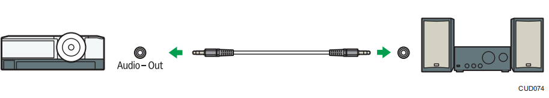
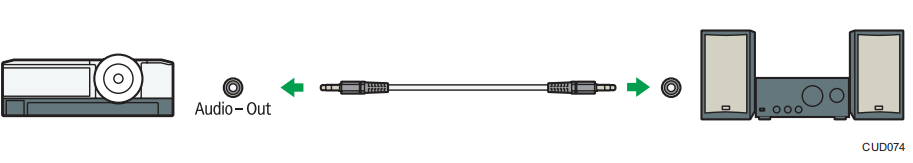

连接外部扬声器¶
可以将音频信号输出到外部扬声器。要连接外部扬声器，请将音频电缆连接至投影仪的 Audio Out 端口和外部扬声器的音频输入。
注：
连接外部扬声器后，投影仪的扬声器将没有声音输出。
通过[Volume]按钮可调节外部扬声器的声音输出。
可以将音频信号输出到外部扬声器。要连接外部扬声器，请将音频电缆连接至投影仪的 Audio Out 端口和外部扬声器的音频输入。
注：
连接外部扬声器后，投影仪的扬声器将没有声音输出。
通过[Volume]按钮可调节外部扬声器的声音输出。